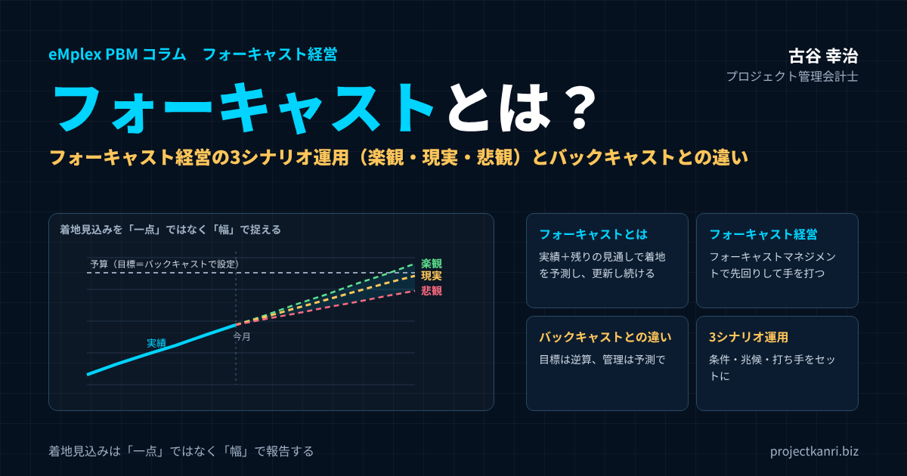

フォーキャストとは？フォーキャスト経営・フォーキャストマネジメントの3シナリオ運用―バックキャストとの違いと、楽観・現実・悲観の使い分け

結論：着地見込みは「一点」ではなく「幅」で報告する
この記事の要点
- フォーキャストとは：実績＋残りの見通しで「このままいくとどこに着地するか」を予測し、更新し続けること
- フォーキャスト経営・フォーキャストマネジメント：着地見込みを起点に、先回りして手を打つ経営管理
- バックキャストとの違い：目標は未来から逆算（バックキャスト）、管理は現在から予測（フォーキャスト）
- 3シナリオ運用：着地見込みを楽観・現実・悲観の「幅」で捉え、条件・兆候・打ち手をセットにする
最初に結論を申し上げます。フォーキャスト経営の精度を一段階引き上げるには、着地見込みを一つの数字ではなく、楽観・現実・悲観という三つのシナリオの「幅」で捉え、それぞれのシナリオに対応する打ち手までをセットで準備しておくことが有効です。
多くの会社では、着地見込みを聞かれると、「今期は三億円の着地見込みです」という一つの数字で答えます。経営会議の資料にも、案件ごとの着地見込みが一つずつ並び、その合計として会社全体の見通しが示されます。一見すると明快で、分かりやすい報告の形です。しかし、この一つの数字が持つ不確実性の幅は、案件によって大きく異なります。仕様がほぼ固まり、残りの作業も見通せている案件の三千万円と、まだ顧客との交渉の余地が多く残り、技術的な課題も解決していない案件の三千万円は、同じ三千万円でも、その重みがまったく違います。この二つを同じ一点の数字で扱うと、経営陣は数字の背後にあるリスクの大きさを正しく把握できません。
楽観・現実・悲観という三つのシナリオで幅を持たせて報告すれば、経営陣は「どこに着地しそうか」だけでなく、「どこまで振れる可能性があるか」「何が起きればどちらに振れるのか」を知ることができます。そして、悲観のシナリオが現実になりそうな兆候が見えたときには、あらかじめ準備しておいた打ち手を、迷わずに実行できます。
私自身、新卒で入社した朋友建設で、会社が和議という局面を迎える過程を内側から経験しました。当時の経営には、工事ごとの見通しがほとんど見えていませんでした。仮に見通しがあったとしても、それはおそらく一つの楽観的な数字だったでしょう。悪い可能性を正面から検討し、それに備えるという発想が、組織に根づいていなかったのです。悲観の可能性を直視することは、経営にとって決して後ろ向きなことではなく、会社を守るための前向きな行為なのだと、私はその経験から学びました。
私はこれまで200社を超えるプロジェクト型企業の経営管理を支援してきましたが、着地見込みの運用が成熟している会社ほど、見込みを幅で扱うことに慣れています。一方で、見込みを一点の数字でしか扱えない会社では、見込みが外れるたびに「なぜ外れたのか」という責任の追及が始まり、現場は次第に控えめな見込みしか出さなくなります。見込みの精度を上げようとして、かえって見込みの信頼性を失ってしまう。こうした悪循環を断ち切るのが、三シナリオの運用です。
三シナリオの運用を支える前提は、着地見込みを毎月更新する仕組みです。一点の着地見込みすら更新されていない状態で、三つのシナリオを作ろうとしても、土台がないまま家を建てるようなものです。まだ着地見込みの月次の更新が定着していない会社は、まずそこから始めてください。
誤解のないように申し上げておくと、三シナリオの運用は、見込みの甘さを幅でごまかすための方法ではありません。むしろ逆です。三つのシナリオを作るためには、何が確実で、何が不確実なのか、どのような好材料とリスクがあるのかを、一つひとつ具体的に洗い出さなければなりません。一点の見込みでは曖昧なままにしておけた不確実性の中身を、はっきりと言葉にすることが求められるのです。その意味で、三シナリオの運用は、一点の見込みよりもずっと誠実で、ずっと手間のかかる報告の形だと言えます。
本稿では、単一の予測値がなぜ危険なのかを整理したうえで、三シナリオの全体の設計、現実・楽観・悲観それぞれのシナリオの作り方、経営会議での使い方、運用を軽くするための工夫、業種ごとの応用のポイント、そして私自身がシナリオ思考の価値を学んだ経験までを、実務の視点から具体的にお伝えします。
なお、本稿は2026年9月に公開した同じテーマのコラムを、大幅に加筆したものです。初版では三シナリオの設計の原則をお伝えしましたが、今回は、数値例、シナリオを作るための変動要因の整理の方法、会議の具体的な運営の仕方、資金繰りや要員の計画への活用、よくある失敗とその対策などを加え、経営者や経営企画、プロジェクトマネージャーの方が、自社の運用を設計する際に使えるよう、内容を大きく掘り下げています。前回までのコラムでお伝えした、着地見込みを月次で更新するフォアキャスティングの仕組みを前提に、その一歩先の運用を扱う内容です。
三シナリオの運用は、大企業だけのものではありません。むしろ、少数の大型案件に業績が大きく左右される中堅・中小のプロジェクト型企業ほど、その効果を実感しやすいものです。一件の案件の見込みの振れが、会社全体の業績を大きく動かすからこそ、その振れの幅を事前に知っておくことが、経営の安定に直結します。
本稿で扱う三シナリオは、主に今期や来期といった一年程度までの着地見込みを対象にしたものです。中期経営計画のような数年先の計画を立てる際のシナリオ分析とは、目的も作り方も少し異なります。日々の案件の管理と、四半期や年度の業績の見通しに使うための、実務的なシナリオの運用に焦点を当てています。
フォーキャストとは：「このままいくとどこに着地するか」を予測し続けること
フォーキャストとは、英語のforecast、つまり予測や見通しを意味する言葉です。経営管理の分野では、これまでの実績と、これから先の見通しをもとに、期末やプロジェクトの完了時に業績がどこに着地するかを予測すること、そしてその予測を定期的に更新し続けることを指します。フォアキャストやフォアキャスティングと表記されることもありますが、意味は同じです。
フォーキャストを理解するうえで大切なのは、予算と実績との違いです。予算は、期首や受注時に立てた計画の数字です。実績は、すでに起きたことの数字です。そしてフォーキャストは、実績にこれからの見通しを加えた、未来の着地の数字です。
| 数字 | いつの数字か | 役割 |
|---|---|---|
| 予算 | 期首・受注時に立てた計画 | 目標・約束としての基準 |
| 実績 | すでに起きた過去 | 事実の把握 |
| フォーキャスト（着地見込み） | 実績＋残りの見通しによる未来 | このままいくとどこに着地するかを知り、手を打つ |
プロジェクト型ビジネスでいえば、案件ごとのフォーキャストは、それまでに発生した原価の実績に、残りの作業にかかる原価の見込みを加えた、完成時の総原価の見込みです。英語ではEstimate at Completion、略してEACと呼ばれることもあります。受注金額からこのEACを引いたものが、その案件の着地見込みの粗利になります。
フォーキャストは、一度作って終わりではありません。毎月、実績が確定するたびに見直し、前月からどう変わったのか、なぜ変わったのかを確認します。予算が変わらない基準であるのに対して、フォーキャストは常に最新の状況を映す数字です。この「更新し続ける」という性質こそが、フォーキャストの価値の源泉です。
会社全体の業績についても同じ考え方を使います。期首から当月までの実績に、残りの月の見通しを加えて、期末の着地を予測します。さらに、常に一定の期間先までの見通しを、毎月あるいは四半期ごとに更新し続ける方法を、ローリングフォーキャストと呼びます。
フォーキャスト経営・フォーキャストマネジメントとは：着地を起点に先回りする経営
フォーキャスト経営とは、このフォーキャスト、つまり着地見込みを経営の判断の中心に据え、予算との差が生まれそうなときに、結果が出る前に先回りして手を打つ経営のスタイルです。フォーキャストマネジメントとも呼ばれ、私はプロジェクト型ビジネスの経営管理の中核となる考え方として、これまで多くの会社にお伝えしてきました。
従来型の管理は、予算と実績を比べて、その差を振り返ることが中心でした。もちろん、予算と実績の比較は大切です。しかし、実績は過去の数字であり、差に気づいたときには、すでに打てる手が限られていることも少なくありません。フォーキャスト経営では、予算と実績に加えて、着地見込みを毎月更新し、予算と着地見込みの差に目を向けます。
| 観点 | 従来型の予実管理 | フォーキャスト経営 |
|---|---|---|
| 見る数字 | 予算と実績 | 予算・実績・着地見込み |
| 時間の向き | 過去の振り返り | 未来の着地からの先回り |
| 会議の問い | なぜ予算と違ったのか | このままいくとどこに着地し、何をすべきか |
| 気づくタイミング | 月次・期末の結果が出たあと | 兆候が見えた時点 |
| 見込みの扱い | 一点の数字（または無し） | 毎月更新、重要案件は幅（3シナリオ）で |
フォーキャストマネジメントを機能させるには、三つの仕組みが必要です。一つ目は、案件ごとの実績、特に工数や外注費などの原価を、月次で正しく集める仕組みです。二つ目は、現場の責任者が残りの作業の見込みを毎月更新し、着地見込みを出す仕組みです。三つ目は、その着地見込みをもとに、経営会議で打ち手を決める仕組みです。どれか一つが欠けても、フォーキャスト経営は形だけのものになってしまいます。
そして、フォーキャスト経営をもう一段深めるのが、本稿のテーマである三シナリオの運用です。着地見込みを一つの数字で出すことに慣れてきたら、次は、不確実性の大きい案件について、その数字がどこまで振れ得るのかを、楽観・現実・悲観の幅で捉えるのです。
フォーキャストとバックキャストの違い：目標は逆算し、管理は予測する
フォーキャストとよく比べられる言葉に、バックキャストがあります。バックキャスト、あるいはバックキャスティングとは、目指すべき将来の姿を先に描き、そこから逆算して、今何をすべきかを決める考え方です。一方、フォーキャストは、現在の状況と実績から出発して、このままいくと将来どうなるかを予測する考え方です。
| 観点 | フォーキャスト（フォアキャスティング） | バックキャスト（バックキャスティング） |
|---|---|---|
| 出発点 | 現在の実績と状況 | 目指す将来の姿・目標 |
| 思考の向き | 現在→未来（このままいくとどうなるか） | 未来→現在（そこに至るには何が必要か） |
| 得意な場面 | 進捗管理、着地見込み、早期の軌道修正 | ビジョン・中期目標・予算目標の設定 |
| 問い | どこに着地しそうか | 何をしなければならないか |
| リスク | 現状の延長に縛られ、目標が小さくなる | 現実から乖離した計画を管理に使い続ける |
| 経営での役割 | 管理と意思決定 | 目標設定と方向づけ |
どちらが正しいというものではありません。大切なのは、二つの考え方に正しい役割を与えることです。私がお勧めしているのは、目標はバックキャストで定め、管理はフォーキャストで行う、という使い分けです。
目標をフォーキャストだけで決めると、現状の延長線上の数字しか描けず、会社の成長の意欲が失われがちです。一方、管理までバックキャストで行い、期首に逆算で立てた予算を、状況が変わっても唯一の基準として使い続けると、現実との差に気づくのが遅れます。目指す姿から逆算して高い目標を掲げ、その目標に対して、フォーキャストでこのままいくとどこに着地するのかを毎月確かめ、差を埋める手を打つ。この組み合わせが、プロジェクト型ビジネスの経営を強くします。
三シナリオの運用は、この二つをつなぐ道具でもあります。バックキャストで定めた目標に対して、フォーキャストの現実シナリオでは届かない。しかし、楽観シナリオの条件が満たされれば届く。そう分かれば、楽観シナリオの条件を実現するために何をすべきかという、具体的な議論ができます。バックキャストとフォアキャスティングの役割分担については、別のコラムで詳しく解説していますので、あわせてご覧ください。
なぜ単一の予測値は危険なのか
単一の予測値だけを見せられると、経営陣はその数字を「ほぼ確定した未来」として受け取りがちです。人は、具体的な一つの数字を示されると、その数字に強く引きずられる傾向があります。「三億円の着地見込み」と聞けば、その数字が頭に残り、実際には二億六千万円から三億三千万円の間のどこに着地してもおかしくない状況であっても、三億円を前提に計画を立ててしまいます。
その結果、予測が外れた際の衝撃が過度に大きくなります。二億七千万円で着地したとき、それは当初から想定しうる範囲の結果であったにもかかわらず、「三千万円も外れた」という受け止め方をされます。そして、担当者は「予測を外した」という個人の責任として追及されやすくなります。
これが繰り返されると、現場は保守的な予測しか出さなくなります。外れて責められるくらいなら、最初から控えめな数字を出しておこうと考えるのは、自然な心理です。控えめな見込みは、達成しやすいという意味では現場にとって安全ですが、経営にとっては有害です。本当は取れるはずの機会を逃したり、必要以上に要員の採用や投資を控えたりする判断につながるからです。こうして、フォーキャストそのものの意味が失われていきます。
単一の予測値のもう一つの危険は、合計したときにリスクが見えなくなることです。具体的な数字で考えてみましょう。ある会社で、五つの大型案件の粗利の着地見込みが、それぞれ二千万円だったとします。合計は一億円です。ところが、この五つの案件のうち三つは、仕様がほぼ固まっていて、見込みから大きく外れる心配はありません。残りの二つは、顧客との追加の対価の交渉が続いており、交渉がうまくいけばそれぞれ五百万円上振れし、うまくいかなければ、それぞれ一千万円下振れする可能性があります。この場合、会社全体の粗利は、最善で一億一千万円、最悪で八千万円になり得ます。一億円という一つの数字だけでは、二千万円もの下振れの可能性が隠れていることは分かりません。しかも、その下振れのリスクが、特定の二つの案件に集中していることも見えません。
さらに言えば、一点の予測値は、判断を先送りさせます。「見込みは三億円で、予算の三億二千万円には少し届かないが、まだ期末まで時間がある」という報告を受けた経営陣は、様子を見るという判断をしがちです。しかし、もし悲観のシナリオでは二億六千万円まで下がる可能性があり、その引き金となる出来事が一か月以内に起こり得ると分かっていれば、今すぐ手を打つべきだという判断になるかもしれません。一点の数字は、判断に必要な情報を削ぎ落としてしまうのです。
幅を持たせることは、予測の甘さを隠すためではなく、不確実性そのものを正直に伝えるための誠実な報告の形です。経営陣が知るべきなのは、「どこに着地するか」という一つの答えではなく、「どのような可能性の中で、どこに着地しそうか」という全体像なのです。
ここで一つ付け加えておくと、幅で報告することに対して、「経営陣は一つの数字を求めている」「幅を示すと、責任逃れだと受け取られる」という懸念を持つ方もいます。確かに、幅を示すだけで、それぞれのシナリオの根拠を説明できなければ、そう受け取られても仕方がありません。後ほど詳しく述べるように、三シナリオの価値は、幅そのものではなく、「何が起きればどのシナリオになるのか」を具体的に説明できることにあります。根拠のある幅は、根拠のない一点よりも、はるかに信頼される報告になるのです。
一点の予測値には、組織の学習を妨げるという問題もあります。予測が外れたとき、一点の数字しかなければ、「予測が甘かった」「見積が悪かった」という反省にとどまりがちです。しかし、楽観と悲観の条件が明記されていれば、「悲観の条件として挙げていた外注先の遅れが実際に起きた」「想定していなかった顧客側の組織変更が起きた」といった形で、何が起きて、それが事前に想定できていたのかどうかを具体的に振り返ることができます。想定していたリスクが顕在化したのであれば、打ち手の準備が十分だったかを検証できますし、想定外の出来事であれば、次からどのような兆候に注意すべきかを学ぶことができます。
数字の受け手である経営陣の側にも、変化が求められます。一つの数字を求め、その数字が外れると担当者を責める。こうした姿勢が続く限り、現場は幅を示すことをためらい、控えめな一点の数字を出し続けます。経営陣自身が、「幅で報告してほしい」「悲観の可能性を早く教えてほしい」と明確に求め、幅で報告された内容に基づいて落ち着いて判断する姿勢を示すことが、三シナリオの運用を根づかせる前提になります。
一点の予測値が持つこうした危険は、案件の数が増えるほど大きくなります。案件が数件のうちは、経営者が一件ずつ状況を聞き、頭の中で不確実性の幅を補って判断することもできます。しかし、案件が数十件、数百件になれば、それは不可能です。案件の数が多い会社ほど、不確実性を仕組みとして見える化する必要があるのです。
三シナリオの全体設計：何を変数にして、どの単位で作るか
三つのシナリオの具体的な作り方に入る前に、全体の設計について整理しておきます。設計を誤ると、シナリオの作成に手間がかかるばかりで、経営の判断に使えない資料になってしまいます。
最初に決めるべきは、シナリオを作る単位です。三シナリオは、案件の単位で作る方法と、会社全体や事業部の単位で作る方法があります。私がお勧めしているのは、案件の単位でシナリオを作り、それを積み上げて会社全体のシナリオにする方法です。会社全体の数字に対して、漠然と「楽観で一割増、悲観で一割減」といった幅を持たせても、その幅に根拠はありません。案件ごとに、具体的な好材料とリスクをもとにシナリオを作り、それを合計することで、根拠のある幅が得られます。
ただし、案件ごとの悲観シナリオをすべて足し合わせたものを、会社全体の悲観シナリオとすることには注意が必要です。すべての案件で同時に悪いことが起きる可能性は、通常はそれほど高くありません。すべての悲観を足し合わせると、現実にはほぼ起こり得ない、過度に悲観的な数字になってしまいます。一方で、景気の悪化や資材価格の高騰のように、多くの案件に同時に影響する要因もあります。会社全体のシナリオを作る際には、「案件ごとに独立したリスク」と「複数の案件に共通するリスク」を分けて考えることが大切です。
次に決めるべきは、シナリオを動かす変数です。着地見込みを左右する要因のうち、どれを変化させてシナリオを作るのか。プロジェクト型ビジネスでは、主に次のような変数が考えられます。売上の側では、追加の受注や作業範囲の拡大、単価の改定、そして失注や減額です。原価の側では、残りの工数の増減、外注費の単価や量の変化、資材の価格の変動です。時期の側では、完了や検収の時期のずれによる、売上の計上時期の変化です。
これらの変数のうち、案件ごとに影響の大きいものを二つか三つ選び、それぞれについて現実・楽観・悲観の値を置きます。すべての変数を動かそうとすると、組み合わせが膨大になり、作業が回らなくなります。影響の大きい少数の変数に絞ることが、運用を続けるための第一の工夫です。
三つ目に決めるべきは、シナリオの見せ方です。私がお勧めしているのは、案件ごとに、現実シナリオの着地見込みを中心に、楽観と悲観の数字を左右に並べ、その横に「楽観の条件」と「悲観の条件」を短い言葉で記した一覧表です。たとえば、「楽観：追加機能の発注が十月中に確定すれば、売上が八百万円増」「悲観：外注先の納期が一か月遅れれば、検収が来期にずれ込み、今期の売上が二千万円減」といった形です。数字だけでなく、その数字になる条件が書かれていることで、経営陣は何を見守り、何に手を打つべきかを理解できます。
四つ目に決めるべきは、更新の頻度です。三シナリオは、一度作って終わりではなく、着地見込みの更新と同じく、月次で見直すことが基本です。楽観の条件が実現すれば、その分は現実シナリオに取り込まれます。悲観の条件が顕在化すれば、それも現実シナリオに反映されます。こうして、時間の経過とともに、不確実な部分が確定していき、三つのシナリオの幅は狭まっていきます。幅が狭まっていく様子を追うこと自体が、案件の不確実性が解消されていく過程を見ることになります。逆に、期末が近づいても幅が狭まらない案件は、それだけ不確実性が残っている案件であり、注意が必要です。
最後に、シナリオを作る責任者を明確にしておきます。案件ごとのシナリオは、案件の状況を最もよく知るプロジェクトマネージャーが作り、事業の責任者が確認します。会社全体のシナリオは、経営企画や財務の担当者が、案件ごとのシナリオを取りまとめ、共通のリスクを加味して作ります。誰が作り、誰が確認するのかが決まっていなければ、シナリオは形骸化していきます。
ここで、会社全体の三シナリオの数値例を示しておきます。ある会社の今期の粗利の予算が四億円だったとします。進行中と見込みの案件を積み上げた現実シナリオの粗利は三億七千万円で、予算に三千万円届きません。楽観シナリオでは、交渉中の追加案件二件と単価の改定一件が実現した場合として、四億二千万円。悲観シナリオでは、案件ごとに独立した既知のリスクのうち主要なものが顕在化した場合として、三億三千万円です。さらに、資材の価格の高騰のように複数の案件に共通するリスクが加われば、三億一千万円まで下がる可能性があります。この一覧を見た経営陣は、「楽観の材料をすべて実現させなければ予算には届かない」「悲観の場合は、予算に対して七千万円から九千万円の不足になる」ということを一目で理解できます。三億七千万円という一つの数字だけでは、この判断の材料は得られません。
シナリオの設計にあたっては、既存の管理の仕組みとの整合も確認しておきます。月次の着地見込みの更新、予算との乖離の検知、経営会議での意思決定。こうした既存の流れの中に、三シナリオの作成と議論をどう組み込むのか。別の資料や別の会議として追加するのではなく、既存の着地見込みの資料に楽観と悲観の欄を加え、既存の経営会議の議題の中で扱う形にすれば、運用の負担は最小限で済みます。
シナリオの対象期間についても決めておきます。案件の単位のシナリオは、案件の完了までを対象にします。会社全体のシナリオは、今期の末までを基本とし、期の後半に入ったら来期の上期までを加える、といった形で、常に一定の期間先までを見通せるようにしておくと、期をまたぐ案件の影響も捉えやすくなります。
現実シナリオを起点に据える
三シナリオ運用の出発点は、最も起こる可能性が高いと考えられる「現実シナリオ」です。これは、従来型の単一の予測に相当するもので、現在の受注の状況、作業の進捗率、原価の消化のペースをもとに、最も合理的な仮定を積み上げて算出します。
この現実シナリオを土台として、そこからどれだけ上振れし、下振れし得るかという幅を考えることで、楽観と悲観の両方のシナリオが初めて意味を持ちます。現実シナリオの精度が低いままでは、他の二つのシナリオも説得力を失います。ですから、三シナリオの運用を始める前に、まず現実シナリオ、つまり通常の着地見込みの精度を高めておくことが大切です。
現実シナリオの作り方は、前回のコラム「バックキャスティングからフォアキャスティングへ」でお伝えした着地見込みの作り方と同じです。原価の着地見込みは、これまでに発生した原価の実績と、完了までに発生すると見込まれる残りの原価の合計として計算します。残りの原価は、残りの作業の工数に時間単価を掛けた労務費、今後発生する外注費、その他の経費を積み上げて見積もります。売上の着地見込みは、契約済みの金額に、確度の高い追加や減額を反映させます。
現実シナリオを作る際に最も注意すべきなのは、「最も起こりやすい」という意味を取り違えないことです。現実シナリオは、担当者の希望や、予算を達成するために必要な数字ではありません。また、責められないための控えめな数字でもありません。今ある情報から、最も起こりやすいと合理的に判断できる数字です。この点を明確にしておかないと、現実シナリオには楽観的な期待や、逆に過度な保守性が紛れ込み、シナリオ全体の土台が揺らぎます。
現実シナリオに含めるものと含めないものの基準を、あらかじめ決めておくことも有効です。たとえば、売上については、「顧客から書面や正式な発注で合意が得られた金額は現実シナリオに含める」「交渉中の追加の対価は現実シナリオには含めず、楽観シナリオの材料とする」といった基準です。原価については、「残りの作業の見積に、過去の同じ種類の案件で見られた超過の傾向を加味する」といった基準が考えられます。基準が明確であれば、プロジェクトマネージャーごとの判断のぶれを抑えることができます。
現実シナリオの精度を確かめる方法として、私がお勧めしているのは、過去の見込みと実際の着地を比べる振り返りです。完了した案件について、三か月前、六か月前の時点の現実シナリオの数字と、実際の着地を並べます。見込みが系統的に楽観的だったのか、悲観的だったのか。どの時点から、どの要因でずれが生じたのか。こうした振り返りを続けることで、現実シナリオの作り方の癖が見えてきます。
特に注意したいのが、プロジェクトマネージャーによる見込みの癖です。常に楽観的な見込みを出すマネージャーもいれば、常に慎重な見込みを出すマネージャーもいます。過去の見込みと実績の差をマネージャーごとに記録しておけば、それぞれの傾向を踏まえて見込みを評価できるようになります。これは個人を責めるためではなく、見込みの精度を組織として高めるための情報です。
現実シナリオは、三つのシナリオの中で最も頻繁に参照される数字であり、会社全体の業績の見通しや、業績予想の開示の基礎になる数字でもあります。だからこそ、その数字がどのような前提と基準で作られているのかを、組織全体で共有しておくことが欠かせません。
現実シナリオの作成にあたっては、受注の見込み案件の扱いにも注意が必要です。まだ受注が確定していない案件を、会社全体の現実シナリオにどう含めるか。私がお勧めしているのは、受注の確度を、客観的な事実に基づいて段階分けし、確度の高い段階の案件だけを現実シナリオに含める方法です。たとえば、「顧客の予算の確保と決裁者の内諾が確認済み」の案件は現実シナリオに含め、「提案済みで検討中」の案件は楽観シナリオの材料とする、といった形です。確度の基準が担当者の感覚に委ねられていると、現実シナリオは容易に楽観的になってしまいます。
現実シナリオの信頼性を高めるうえで、もう一つ大切なのは、その数字が「誰の判断で確定したか」を明確にしておくことです。プロジェクトマネージャーが作成し、事業の責任者が確認して確定する。確認の際に数字を修正した場合は、その理由を記録する。この流れが決まっていれば、現実シナリオは担当者個人の見込みではなく、組織として合意された見込みになります。
現実シナリオと予算の関係についても触れておきます。現実シナリオが予算を下回っている場合、その差を埋めるための打ち手を考えるのは当然です。しかし、打ち手の効果を、まだ実行もしていない段階で現実シナリオに織り込んではいけません。打ち手の効果は、実行され、実績に表れ始めてから現実シナリオに反映させます。それまでは、楽観シナリオの材料として扱うのが適切です。この区別を守ることで、現実シナリオは「願望」ではなく「見通し」であり続けます。
楽観シナリオは「すでに動いている好材料」に限定する
楽観シナリオを作る際、根拠のない期待を積み上げてしまう失敗が非常に多く見られます。「営業が頑張れば、もう一件受注できるかもしれない」「顧客が気に入ってくれれば、追加の発注があるかもしれない」「チームの効率が上がれば、工数が減るかもしれない」。こうした期待を積み上げた楽観シナリオは、ほとんどの場合、実現しません。そして、実現しない楽観シナリオが繰り返し示されると、経営陣は楽観シナリオを「絵に描いた餅」として相手にしなくなり、三シナリオの運用そのものへの信頼が失われます。
有効な楽観シナリオとは、まだ確定はしていないものの、実際に動きがすでに存在する好材料だけを織り込んだものです。たとえば、実際に商談が進んでいる追加の案件、すでに顧客と交渉が進んでいる単価の改定、正式な見積を提出済みの作業範囲の拡大、協力会社と条件の見直しを協議中の外注費の削減などです。「頑張ればいけるかもしれない」という願望ではなく、「今動いている材料が実現すればこうなる」という、検証可能な仮説として設計することが重要です。
楽観の材料を選ぶ際に、私が支援先でお勧めしている基準は次のとおりです。第一に、相手のある話であれば、相手側に具体的な動きがあること。顧客が追加の見積を依頼してきた、協力会社が条件の見直しに応じる意向を示した、といった事実です。第二に、実現の時期を特定できること。「いつか」ではなく、「十月中に」「今期中に」と、見込みの対象期間の中で実現し得る時期が見えていること。第三に、金額を見積れること。実現した場合に、売上や原価がいくら変わるのかを計算できることです。この三つの基準を満たさない材料は、楽観シナリオには含めません。
楽観の材料には、それぞれ「実現の条件」を明記しておきます。たとえば、「追加機能の開発、八百万円。条件は、十月末までに顧客の予算の承認が下りること」といった形です。条件が明記されていれば、翌月の見直しの際に、その条件が満たされたのか、満たされる見込みが高まったのか、それとも遠のいたのかを確認できます。条件が満たされれば、その材料は現実シナリオに移します。条件が満たされる見込みがなくなれば、楽観シナリオから外します。
楽観シナリオには、経営にとって重要な役割がもう一つあります。それは、「楽観シナリオに近づけるために、今何をすべきか」を考えるきっかけになることです。楽観の材料が明確になっていれば、その実現の確度を高めるための打ち手が見えてきます。追加の案件の商談を前に進めるために、経営陣自身が顧客を訪問する。単価の改定の交渉を有利に進めるために、これまでの成果を示す資料を準備する。楽観シナリオは、ただ待つための数字ではなく、取りに行くための目標でもあるのです。
ここで一つ注意しておきたいのは、楽観シナリオと予算の関係です。予算の達成が難しい状況になると、楽観シナリオを予算に近づけるために、根拠の薄い材料を無理に加えたくなることがあります。しかし、それをしてしまうと、楽観シナリオは予算の言い訳のための数字になり、本来の意味を失います。楽観シナリオが予算に届かないのであれば、それは「すべての好材料が実現しても予算には届かない」という、経営にとって極めて重要な情報です。その事実を正直に示すことが、早い段階での対策の検討につながります。
楽観の材料の中には、社内の工夫によって実現できるものもあります。たとえば、作業の進め方の改善によって残りの工数を減らせる見込みがある場合です。ただし、こうした材料は、相手のある話に比べて、実現の度合いを客観的に判断しにくいものです。社内の改善を楽観シナリオに含める場合は、すでに改善の取り組みが始まっており、直近の実績に効果が表れ始めていることを条件にするとよいでしょう。「改善すれば減るはず」という見込みだけでは、楽観の材料としては弱すぎます。
楽観の材料を記録し続けていると、自社の楽観の材料がどれくらいの割合で実現しているのかも分かってきます。過去一年の楽観の材料のうち、実現したのは三割だった、といった実績が分かれば、楽観シナリオの数字をどの程度重視すべきかの目安になります。
楽観シナリオの材料が実現したときには、その経緯を記録しておくことも大切です。どのような働きかけが実を結んだのか、実現までにどれくらいの時間がかかったのか。こうした記録は、次の案件で同じような好材料を取りに行く際の参考になります。楽観シナリオは、うまくいったことから学ぶための記録にもなるのです。
楽観シナリオと現実シナリオの差が、案件の規模に比べて極端に大きい場合も注意が必要です。それは、案件の不確実性が非常に高いか、楽観の材料の中に根拠の薄いものが混ざっている可能性を示しています。事業の責任者は、楽観の材料の一つひとつについて、先ほど述べた三つの基準を満たしているかを確認し、必要であれば材料を絞り込むよう求めてください。
悲観シナリオは「既知のリスク」を織り込む
悲観シナリオも同様に、漠然とした不安ではなく、すでに把握している具体的なリスクの要因を織り込んで作成します。特定の外注先の納期の遅れのリスク、仕様変更の可能性が高い案件、資材の価格の変動、顧客の予算の削減の可能性、主要なメンバーの離脱のリスクといった、現時点で認識している既知のリスクが顕在化した場合の着地点を試算します。
未知のリスクまで悲観シナリオに含めようとすると、際限がなくなります。「大地震が起きたら」「主要顧客が倒産したら」といった、あらゆる可能性を考え始めると、悲観シナリオはどこまでも悪くなり、現実の判断には使えなくなります。あくまで「今分かっているリスク」に限定して設計することが、実務上の運用可能性を保つ秘訣です。
悲観の材料を選ぶ基準も、楽観の場合と同様に考えられます。第一に、リスクの兆候がすでに具体的に見えていること。外注先から作業の遅れの連絡があった、顧客から仕様の見直しを示唆する発言があった、資材の価格の値上げの通知が届いた、といった事実です。第二に、顕在化の時期が見込みの対象期間の中にあること。第三に、顕在化した場合の影響の金額を見積れることです。
悲観の材料にも、それぞれ「顕在化の条件」と「兆候」を明記しておきます。たとえば、「外注先の納期の遅れにより、検収が来期にずれ込む。今期の売上が二千万円減。兆候は、十月中旬の中間の成果物の遅れ」といった形です。兆候を明記しておくことで、翌月の見直しの際に、そのリスクが顕在化に近づいているのか、遠のいているのかを判断できます。
悲観シナリオを作る際に、特に意識していただきたいのが、時期のずれのリスクです。プロジェクト型ビジネスでは、案件そのものの損益は変わらなくても、完了や検収の時期がずれることで、売上の計上が翌期にずれ込むことがよくあります。案件の単位で見れば問題がなくても、会社の今期の業績の見通しには大きな影響を与えます。期末に近い時期に検収を予定している案件は、時期のずれのリスクを悲観シナリオに必ず織り込んでください。
では、未知のリスクにはどう備えればよいのでしょうか。私は、未知のリスクは個別の悲観シナリオに含めるのではなく、会社全体の計画の中に一定の余裕を持たせることで備えることをお勧めしています。たとえば、資金繰りの計画で、悲観シナリオの資金の見通しに加えて、一定の手元資金の水準を確保しておくといった方法です。既知のリスクは悲観シナリオで、未知のリスクは全体の余裕で。この役割分担を意識することで、悲観シナリオは現実的な判断の道具であり続けることができます。
なお、悲観シナリオとは別に、いわゆるストレステストとして、極端な状況を想定した試算を行うこともあります。たとえば、「最大の顧客からの受注がすべて止まったら」「主要な事業の売上が三割減ったら」といった試算です。これは、日々の案件の管理のための悲観シナリオとは目的が異なり、会社の財務の耐久力を確かめるためのものです。年に一度や、事業計画を策定する際など、頻度を分けて行うとよいでしょう。
悲観シナリオは、経営陣にとって、見たくない数字かもしれません。しかし、悲観シナリオを直視し、それが現実になった場合の打ち手を事前に考えておく会社ほど、実際に悪い状況になったときに、落ち着いて速やかに対応できます。悲観シナリオは、不安をあおるための数字ではなく、不安に備えるための数字なのです。
悲観シナリオの材料を集める際には、プロジェクトマネージャーだけに任せず、複数の視点を取り入れることが有効です。現場のマネージャーは、自分の案件のリスクを過小に見積もりがちです。営業の担当者は顧客側の予算や組織の変化に、購買の担当者は協力会社や資材の状況に、それぞれ独自の情報を持っています。月次の見直しの際に、こうした関係者から「気になっていること」を集める場を設けるだけで、悲観シナリオの材料は格段に充実します。
また、悲観の材料の中には、顕在化を防ぐための手を事前に打てるものもあります。外注先の遅れのリスクであれば、進捗の確認の頻度を上げる、代替の協力会社の候補を探しておく。顧客の予算の削減のリスクであれば、早めに顧客と今後の計画について話し合う。悲観シナリオを作ることは、リスクに備えるだけでなく、リスクの顕在化そのものを防ぐきっかけにもなるのです。
悲観シナリオの数字が、他のシナリオに比べて大きく悪い案件については、その案件の受注の判断そのものを振り返ることも有益です。受注の時点で、そのリスクは見えていたのか。見えていたなら、価格や契約の条件に反映されていたのか。悲観シナリオの振り返りは、将来の受注の判断を改善するための材料にもなります。
悲観シナリオと現実シナリオの差が小さすぎる案件にも、注意を払う必要があります。リスクがほとんどない案件であれば問題ありませんが、実際にはリスクがあるのに、担当者がそれを認識していない、あるいは報告していない可能性もあります。過去の同じ種類の案件で、見込みから下振れした幅と比べて、悲観シナリオの幅が小さすぎないかを確認することが、見落としを防ぐ一つの方法です。
三シナリオを経営会議でどう使うか：シナリオごとに打ち手を用意する
三シナリオを提示するだけでは、経営会議での議論は深まりません。重要なのは、悲観シナリオが実現した場合にどのような対応策を打つか、楽観シナリオに近づけるためにどのような行動を取るかを、シナリオごとにあらかじめ議論しておくことです。単に幅のある数字を眺めるだけの会議ではなく、それぞれのシナリオに結びついた打ち手を準備しておくことで、実際に状況が変化した際に速やかに動ける体制が整います。シナリオは眺めるものではなく、行動につなげるものだという意識が欠かせません。
経営会議での三シナリオの使い方として、私がお勧めしている流れを具体的にご紹介します。
最初に、会社全体の三シナリオを、予算と並べて確認します。現実シナリオが予算に対してどの位置にあるのか。楽観シナリオなら予算に届くのか。悲観シナリオではどこまで下がるのか。この全体像を最初に共有します。
次に、幅の大きい案件、つまり楽観と悲観の差が大きい案件を上位から確認します。会社全体の幅を生み出しているのは、多くの場合、少数の案件です。その案件について、楽観の条件と悲観の条件、そしてそれぞれの兆候の現状を、プロジェクトマネージャーから報告してもらいます。
三つ目に、悲観シナリオへの備えを議論します。悲観の条件が顕在化した場合に、どのような打ち手を取るのかを、あらかじめ決めておきます。たとえば、「外注先の遅れが確定した場合は、社内の要員を二名追加して挽回を図る」「顧客の予算の削減が決まった場合は、作業範囲を絞り込んだ代替の提案を行う」といった形です。そして、その打ち手を実行する判断の基準、いわゆるトリガーも決めておきます。「十月中旬の中間の成果物が一週間以上遅れた時点で、要員の追加を決定する」といった基準です。トリガーが決まっていれば、状況が変わったときに、改めて会議を開いて議論する必要はありません。
四つ目に、楽観シナリオへの働きかけを議論します。楽観の材料のうち、会社として実現の確度を高められるものについて、誰が、いつまでに、何をするのかを決めます。
そして最後に、前月の会議で決めた打ち手の実行状況と、その効果を確認します。
三シナリオは、案件の管理だけでなく、会社全体の経営の判断にも活用できます。代表的なのが、資金繰りの計画です。悲観シナリオで売上の計上や入金が遅れた場合に、手元の資金がどこまで減るのかを試算しておけば、必要な借入の枠を事前に確保するといった備えができます。要員の計画にも使えます。楽観シナリオで追加の案件が実現した場合に、どれだけの人手が足りなくなるのかが分かれば、協力会社の確保や採用の準備を前倒しで進めることができます。逆に、悲観シナリオで案件が減った場合に、手の空く要員をどの案件や社内の取り組みに振り向けるのかも、あらかじめ考えておけます。
上場企業であれば、業績予想の開示との関係も重要です。業績予想は、通常は現実シナリオに近い数字として公表されます。しかし、悲観シナリオとの差が大きい場合、業績予想の修正が必要になる可能性をあらかじめ把握しておく必要があります。三シナリオを継続して運用していれば、修正の要否の判断を、期末の直前ではなく、早い段階から冷静に行うことができます。
三シナリオを導入しても、経営会議での取り上げ方が従来と変わらなければ、結局は現実シナリオの数字だけが注目され、楽観と悲観のシナリオは形骸化してしまいます。会議の議題に、「悲観シナリオが実現した場合の対応策」という議題を明示的に組み込み、毎回一定の時間を割いて議論する運用にすることで、シナリオが単なる添え物ではなく、意思決定の一部として機能するようになります。会議の設計そのものを見直すことが、シナリオ運用の定着を左右する重要な要素です。
トリガーの設定について、もう少し補足しておきます。トリガーは、できるだけ客観的に判断できる事実にしておくことが大切です。「状況が悪化したら」という曖昧な条件では、判断が先送りされがちです。「中間の成果物の納品が予定日から五営業日以上遅れたら」「顧客から予算の見直しについて正式な連絡があったら」「資材の見積価格が予算の単価を一割以上上回ったら」といった、誰が見ても判断できる条件にしておきます。そして、トリガーに該当したときに、誰が打ち手の実行を決めるのか、その権限もあらかじめ決めておきます。
エンプレックスでCFOを務めていた頃、大型案件のリスクについて、経営会議で打ち手とトリガーを事前に決めておく運用を取り入れました。ある案件で、あらかじめ悲観の条件として挙げていた協力会社の遅れが実際に起きたとき、事前に決めていたとおりに社内の要員を追加する判断を、その週のうちに下すことができました。もし事前の議論がなければ、状況の確認と議論に何週間もかかり、その間に遅れはさらに広がっていたはずです。
シナリオの議論の結果は、議事録として残しておくことをお勧めします。どの案件について、どのような楽観と悲観の条件が挙げられ、どのような打ち手とトリガーが決まったのか。そして、その後、実際に何が起きたのか。この記録が蓄積されると、自社の案件で起きやすいリスクの種類や、効果のあった打ち手の傾向が見えてきます。三シナリオの運用は、会社のリスク管理の知見を蓄えていく仕組みでもあるのです。
会議の時間配分の目安として、私は、会社全体の三シナリオの確認に一割、幅の大きい案件の報告と悲観への備えの議論に五割、楽観への働きかけに二割、前月の打ち手の確認に二割程度を充てることをお勧めしています。順調な案件の説明には、時間をほとんど使いません。議論すべきは、不確実性の大きい案件と、それに対する打ち手です。
運用を軽くする工夫と、業種による応用のポイント
すべての案件について三シナリオを精緻に作り込もうとすると、現場の負担が急激に増え、運用が続かなくなります。実務上は、金額の規模が大きい、あるいはリスクの高い一部の重要案件に絞って三シナリオの運用を導入し、それ以外の案件は従来どおりの単一の予測にとどめるという割り切りが現実的です。全案件への一律の適用にこだわらず、重要度に応じて手間のかけ方を変える発想が、無理なく続けられる運用のポイントになります。
対象とする案件を選ぶ基準としては、たとえば次のようなものが考えられます。受注金額が一定の額以上の案件。仕様変更が発生しやすい、あるいは技術的な難易度の高い案件。期末の近くに検収を予定している案件。そして、前月の見込みから大きく変動した案件です。こうした基準に当てはまる案件を、毎月の見直しの際に選び出し、三シナリオの対象とします。私の経験では、案件数の一割から二割程度を対象にすれば、会社全体の不確実性の大部分をカバーできることが多いものです。
小規模な案件や定型的な案件については、個別にシナリオを作る代わりに、過去の実績から求めた一定の幅を機械的に当てはめる方法も有効です。たとえば、過去の同じ種類の案件で、着地の粗利が見込みから平均してどれくらい上下に振れたのかを調べ、その幅を使うのです。個別の検討はしなくても、会社全体のシナリオを作る際に、こうした案件の不確実性もある程度は反映できます。
シナリオの作成の手間を減らすためには、様式を統一することも大切です。案件ごとに、現実・楽観・悲観の数字と、楽観と悲観の条件、兆候を記入する欄を決めておきます。様式が決まっていれば、プロジェクトマネージャーは毎月、前月の記入内容を見直して、変わったところだけを更新すれば済みます。
ここで、よくいただく質問にお答えしておきます。
一つ目は、「三シナリオは、すべての案件に導入すべきか」という質問です。必ずしもすべての案件で必要ではありません。今述べたように、金額の規模が大きい、あるいは仕様変更が発生しやすい不確実性の高い案件から優先的に導入し、定型的で見通しの立てやすい案件は、従来どおりの単一の予測で構いません。
二つ目は、「シナリオごとの確率まで示す必要があるか」という質問です。厳密な確率の算出は難易度が高く、実務上は必須ではありません。まずは三つの幅を示し、それぞれの実現の条件を言葉で説明できる状態を目指すところから始めるのが現実的です。運用に慣れてきたら、「楽観の条件が実現する可能性は高い、中程度、低い」といった大まかな評価を加えることで、議論をさらに深めることができます。
次に、業種による応用のポイントです。三シナリオを設計する際に重視すべき変動要因は、業種によって異なります。
IT・ソフトウェア開発業では、仕様変更や追加開発の受注の確度が、楽観と悲観の分かれ目になりやすい傾向があります。追加開発の発注が得られるかどうかで売上が大きく変わり、仕様変更への対応が無償になるか有償になるかで粗利が大きく変わります。テストの工程での不具合の件数も、悲観シナリオの重要な変数です。
建設業では、資材の価格の変動や、天候による工期の遅れが主な変動要因になります。発注前の資材について、価格が上昇した場合の影響を悲観シナリオに、設計変更に伴う追加の工事の受注を楽観シナリオに織り込むといった形です。
映像制作業であれば、出演者やロケーションの調整による撮影の日数の増減が影響しやすい傾向があります。コンサルティング業では、顧客側の都合による作業範囲の拡大と、その追加の対価が認められるかどうかが、分かれ目になりがちです。
自社の業種の特性に応じて、シナリオを左右する変動要因をあらかじめ明確にしておくことが、精度の高い三シナリオの運用の土台になります。
運用を始める際の順序としては、まず対象の案件を数件に絞って三シナリオを作り、経営会議で一、二か月試してみることをお勧めします。その過程で、様式の使い勝手、材料の選び方の基準、会議での議論の時間配分などを調整します。運用の形が固まってから対象の案件を広げていけば、現場の負担を抑えながら、仕組みを定着させることができます。
シナリオの運用に慣れてくると、プロジェクトマネージャーの意識にも変化が表れます。自分の案件の楽観と悲観の条件を毎月考えることで、案件のリスクと機会に対する感度が高まっていきます。「このまま進めると、悲観の条件に近づいてしまう」「この働きかけをすれば、楽観の材料が実現するかもしれない」と、先を見越して動けるマネージャーが増えていく。これは、三シナリオの運用がもたらす、数字には表れにくい大きな効果です。
業種を問わず共通する変動要因として、要員の確保も挙げておきます。キーとなるメンバーが病気や退職で離脱した場合、代わりの人材がすぐに見つからなければ、工期の遅れや品質の低下につながります。特定の人に依存している案件では、その人の離脱を悲観シナリオの材料として意識しておくことが大切です。これは、要員の配置や育成の計画を見直すきっかけにもなります。
3シナリオのフォーキャストレポートの様式例
ここまでの内容を、経営会議で使うフォーキャストレポートの様式に落とし込むと、次のような形になります。重要な案件だけを対象に、現実シナリオを中心に置き、楽観と悲観の条件と打ち手を同じ行に並べます。
| 案件 | 予算粗利 | 悲観 | 現実（着地見込み） | 楽観 | 悲観の条件・兆候と打ち手 | 楽観の条件と働きかけ |
|---|---|---|---|---|---|---|
| A案件 | 2,000 | 1,000 | 1,800 | 2,500 | 追加対価の交渉が不調→翌月の交渉結果で判断、範囲の再定義を提案 | 追加対価が全額認められる→役員同席で交渉 |
| B案件 | 1,500 | 1,200 | 1,500 | 1,600 | 外注先の遅延→代替要員の確保を事前に打診 | 前倒し検収→顧客と検収日程を調整 |
| C案件 | 2,000 | 1,700 | 2,000 | 2,000 | 仕様変更の多発→変更管理の徹底 | ― |
| 合計 | 5,500 | 3,900 | 5,300 | 6,100 |
数値は説明のための例です。対象はすべての案件ではなく、金額が大きく不確実性の高い案件に絞ります。
この形にすると、会社全体の着地見込みの幅が一目で分かるだけでなく、その幅がどの案件の、どの条件から生まれているのかが分かります。例では、現実シナリオの合計は予算に二百万円届きませんが、楽観シナリオでは上回り、悲観シナリオでは千六百万円下回ります。そして下振れの大半がA案件の追加対価の交渉にかかっていることが分かるため、経営会議の議論はA案件の交渉にどう臨むかに集中できます。
様式を作る際の注意点は、シナリオの数字だけを並べないことです。条件と兆候、打ち手の欄がなければ、三シナリオは単なる数字の幅になり、意思決定には使えません。数字よりも、むしろ文章の欄にこそ価値があると考えてください。
ホリプロの新規事業で学んだシナリオ思考の価値と、まとめ
最後に、私自身がシナリオ思考の価値を学んだ経験をお話しさせてください。
私がホリプロでテレビ通販事業という新規事業の立ち上げに携わっていた際、実績のデータがまだ乏しい中で、単一の数字を経営陣に示すことの危うさを痛感しました。視聴率や販売の実績の変動の幅が大きい事業だからこそ、楽観・現実・悲観という複数の仮説を並べて議論する習慣が、投資の判断の質を大きく高めてくれたことを、今でも覚えています。
一つの数字だけを示していた頃は、その数字が外れるたびに、計画そのものへの信頼が揺らぎました。しかし、三つのシナリオと、それぞれの前提を並べて示すようになってからは、議論の中心が「数字が当たるか外れるか」から、「どの前提が崩れたら、どう動くか」へと移っていきました。悲観のシナリオでも事業を続けられるのか、どの時点で撤退を判断するのか。楽観のシナリオを実現するために、どこに追加の投資をすべきか。シナリオは、経営陣と現場が同じ地図を見ながら議論するための、共通の言葉になったのです。不確実性が高い事業ほど、シナリオ思考の価値は増していくというのが、当時から一貫している実感です。
三シナリオの運用を始めた会社から、よく聞く感想があります。「一つの数字で報告していた頃よりも、経営会議が落ち着いた」というものです。悪い知らせがあっても、それが悲観シナリオの範囲の中の出来事であり、打ち手もすでに決まっていれば、慌てる必要はありません。想定外の出来事が減り、想定内の出来事に淡々と対応できるようになる。それこそが、シナリオ思考が組織にもたらす最大の価値だと私は考えています。
テレビ通販事業で学んだもう一つのことは、シナリオが経営陣の意思決定のスピードを上げるということでした。悲観のシナリオで撤退の基準をあらかじめ決めておいたことで、実際に販売が伸び悩んだ商品について、迷わずに販売の打ち切りを判断できました。逆に、楽観のシナリオの条件が満たされた商品には、ためらわずに追加の放送枠を投入できました。事前に条件と打ち手を決めておくことの価値は、変化が速く大きい事業ほど大きくなるのです。
その後、エンプレックスでCFOを務めた際にも、大型の開発案件の着地の見通しを、単一の数字ではなく幅で経営会議に示すようにしました。案件の数が増え、会社の規模が大きくなるほど、一つひとつの案件の不確実性を正直に示し、その合計として会社全体の見通しの幅を示すことの重要性は増していきました。
三シナリオの運用は、特別な分析の技術や高度な統計の知識を必要とするものではありません。必要なのは、案件ごとの好材料とリスクを具体的な事実として洗い出し、それぞれに条件と兆候と打ち手を結びつけ、毎月見直すという、地道な運用です。まずは、最も金額の大きい案件一件について、楽観と悲観の条件を書き出してみるところから始めてみてください。それだけでも、その案件について、これまで見えていなかったことが見えてくるはずです。
毎月の見込みを記録として残しておけば、過去の見込みと実際の着地を比べる振り返りも行えます。見込みがどの時点から、どの方向に動いたのかを確認することで、シナリオの条件の設定が適切だったかを検証し、次の案件のシナリオづくりに生かすことができます。
本稿でお伝えしたことを振り返ります。フォーキャスト経営を一段深めるには、着地見込みを一つの数字ではなく、楽観・現実・悲観という三つの幅で捉え、それぞれに対応する打ち手までをセットで準備しておくことが有効です。現実シナリオの精度を土台に、検証可能な好材料だけで楽観シナリオを、既知のリスクだけで悲観シナリオを組み立てる。それぞれのシナリオに、実現の条件と兆候を明記し、毎月見直す。経営会議では、悲観シナリオへの備えと、楽観シナリオへの働きかけを、あらかじめ決めておく。そして、運用の対象は重要な案件に絞り、無理なく続けられる形にする。この設計の原則を守ることで、シナリオの運用は形骸化せず、経営の意思決定を支える実践的な道具になります。
私たちが提供している「eMplex PBM」のフォーキャストレポートでは、案件ごとの着地見込みと粗利率を一覧で確認でき、粗利率のアラートで悪化の兆候にいち早く気づくことができます。案件種別・取引先・部署別に掘り下げることもでき、タイムシートの工数は労務費の原価に連携されるため、シナリオの土台となる現実シナリオの数字を、現場に余計な手間をかけずに整えやすくなります。
未来は、一つの数字では語れません。しかし、未来の可能性の幅と、その幅を生み出している条件を正しく把握していれば、どのような未来が訪れても、慌てずに動くことができます。三シナリオの運用は、不確実な未来に対して、組織が落ち着いて備えるための仕組みなのです。
よくある質問（FAQ）
Q. フォーキャストとは何ですか？
A. これまでの実績と、これから先の見通しをもとに、期末やプロジェクト完了時に業績がどこに着地するかを予測し、その予測を定期的に更新し続けることです。プロジェクト単位では、原価の実績に残作業の見込みを加えた完成時総原価（EAC）と、そこから算出する着地見込みの粗利がフォーキャストの中心になります。
Q. フォーキャスト経営・フォーキャストマネジメントとは何ですか？
A. 着地見込み（フォーキャスト）を経営判断の中心に据え、予算との差が生まれそうなときに、結果が出る前に先回りして手を打つ経営管理の考え方です。実績の月次集計、着地見込みの月次更新、経営会議での打ち手の決定という三つの仕組みで運用します。
Q. フォーキャストとバックキャストの違いは何ですか？
A. フォーキャストは現在の実績から「このままいくとどこに着地するか」を予測する考え方、バックキャストは目指す将来の姿から逆算して「今何をすべきか」を決める考え方です。目標はバックキャストで定め、進捗の管理と意思決定はフォーキャストで行う、という使い分けが有効です。
Q. なぜ着地見込みを3シナリオで報告するのですか？
A. 単一の予測値は、不確実性の大きさを隠し、外れたときの責任追及を招いて現場の見込みを保守的にしがちだからです。楽観・現実・悲観の幅と、それぞれの条件・兆候・打ち手を示すことで、経営陣はどこまで振れ得るか、何が起きればどちらに振れるかを把握し、先回りして判断できます。
Q. 3シナリオはすべての案件で作る必要がありますか？
A. いいえ。運用を軽くするため、金額が大きく不確実性の高い重要な案件に絞るのが現実的です。まずは最も金額の大きい案件一件について、楽観と悲観の条件を書き出すところから始めることをお勧めします。